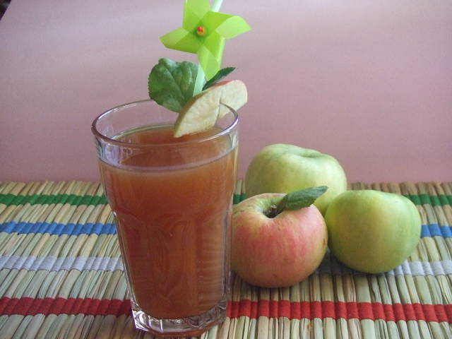

Refresco de manzana y canela

Ingredientes
- 4 manzanas peladas y cortadas en trozos grandes sin quitar el corazón
- 1 rama canela
- 3 o 4 cdas azúcar moreno
- 1 l agua
- 2 cdts agua de azahar
- cubitos de hielo C/N (optativo)
Forma de preparación:
- En una perolita poner las manzanas, la canela y el azúcar con el agua. Cocer durante 20 minutos y dejar en reposo hasta que se enfríe totalmente.
- Colar y añadir el agua de azahar, Guardar en la nevera hasta el momento de servir en que lo pondremos en vasos altos con los cubitos si se utilizan.
¡Y listo! ¡A disfrutar!